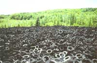
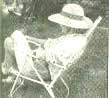

COUNTRY LORE
250,000,000 used tires are added every year to "disposal" sites like this one.
Junked Tires Solve Three Problems
Gophers: After watching both young and mature plants disappear overnight from my vegetable garden, gobbled from the bottom up by gophers, the following year I decided to foil those critters by planting in raised beds out of their reach. Since I didn't have the ability or funds to build those beds, I used tires instead, stacked two high. I learned that you have to pack them clear to the rims inside with soil to keep other critters out, like wasps. I also found that the heat provided by the tires boosted my warm weather crops here in the mountains where the summers can be cool and short. To be on the safe side, I inserted a tall garden pot in one of the tires to provide additional protection for the parsley with its long, tempting taproot. Voila! No more plants lost to gophers.
Compost: Burying my kitchen garbage in the compost had two disadvantages: 1) the wild animals dug it up and ate it, and 2) in the winter, the heap was frozen and I couldn't bury the garbage. Now I use a two-bin system, which is simply two stacks of tires, three tires each.
The garbage is dumped into one stack and I cover it with a shovelful or two of dirt (mixed with sand and ashes in the winter). I chop the garbage and dirt with the end of the shovel. When one stack is full, I start on the other one. By the time that one is full, the other is composted. If you have more garbage than I do, then you'll need more stacks. They work perfectly. The heat provided by the black rubber speeds up the composting process, and they are easily disassembled when it's time to empty them.
Deep Planting on Poor Ground: In some places where I wanted to plant shrubs, the ground was like concrete with practically no topsoil. I used both car and truck tires to provide raised beds for them. These contained beds also made it easier to keep the shrubs watered. In time the water and nutrients worked on the soil beneath the ground level so that the roots could expand. Well okay, despite their advantages, tires are not attractive, so I surrounded them with stones, piling them up until they covered all the rubber. The shrubs are happy and so am I.
-Joanna James
Mosier, Oregon
Hard water and soap stains on plastic or fiberglass tub surrounds can be avoided by applying boat wax to the surface when it is new. Car wax will also do the job, but I think fiberglass wax is better.
-Carl Bettrens
Lawrence, KS
No one is a stranger to the burning, teary-eyed perils of working with hot peppers, but here's a first line of defense for your hands. Before cutting into the peppers, wash your hands, dry thoroughly, and pour a small amount of apple cider vinegar into them. Rub hands together until they are wet and then let them air dry. Peppers will be powerless to burn your hands after that. But you still have to keep them away from your eyes!
-Betty Redden
Taylors, SC
My garden is an eight-by-four oval space. I have set out four early-girl tomato plants and four super-fantastic tomato plants and three cucumber plants. It has always been my goal to have tomatoes by the fourth of July and this year was no exception. Maturity of early-girls is 52-54 days; super-fantastic, 70 days. When I cleaned the garden out last year, I added calcium. It is very important that the tomatoes have sufficient calcium: without it, they will develop blossom end rot. To plant tomatoes, dig a hole approximately 10 to 12 inches deep and wrap the roots of the plants in brown paper (from paper bags). Then put some nitrogen-rich fertilizer in the hole before you insert the plant. I group my tomatoes together, so they can pollinate each other, and use a common lattice inserted in the ground to keep the tomatoes up. Also, plant marigolds around the perimeter-this will discourage pests that would like to eat your plants. When the tomatoes start to set, spray them with a liquid fertilizer. If it doesn't rain, water them every two or three days to at least one inch deep. Spray the liquid fertilizer at least two or three times. I have several pieces of chickenwire that I move around to keep the birds from eating the tomatoes-the cucumbers will take care of themselves.
P.S. I have given away tomatoes, made tomato juice, and I am going to sun-dry some and still there are tomatoes EVERYWHERE.
-Chloe Chitwood
Knoxville, TN
During the winter and early spring, as I plan my garden and other projects for the upcoming summer, I also draw up a list of the tools and materials I will need. When I happen across a missing or broken item (an invariable occurrence all winter long), I jot it down. When warm weather arrives, my garage sale "shopping list" is ready. Last year I found almost everything on the list, including a crowbar and pitchfork, and never once was caught in the middle of the garden without that crucial tool.
After groping in the dark for matches during a recent electrical outage, I was determined never to be caught in that predicament again. Now, I tape a book of matches under the hollow base of every kerosene lamp in the house.
-Ruth F. Jacobs
Gallipolis, OH
Through the years we've all discovered a few practical, time-tested solutions to the frustrating little problems of everyday life. Send your tips to: "Country Lore" c/o MOTHER EARTH NEWS, P.O. Box 129, Arden, N.C. 28704. Please include your phone number and a photo. If we use your letter, we'll be happy to send you a Mother Earth News T-shirt!
|
 ERRY HOWARD/POSITIVE IMAGES |
Ruth Jacobs takes a break from her garden. |
|
|
|
 |
|